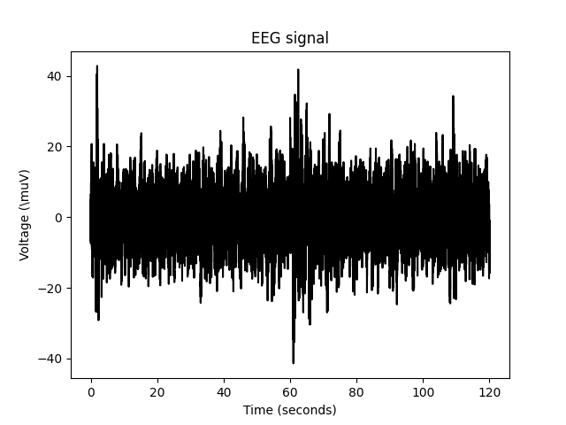
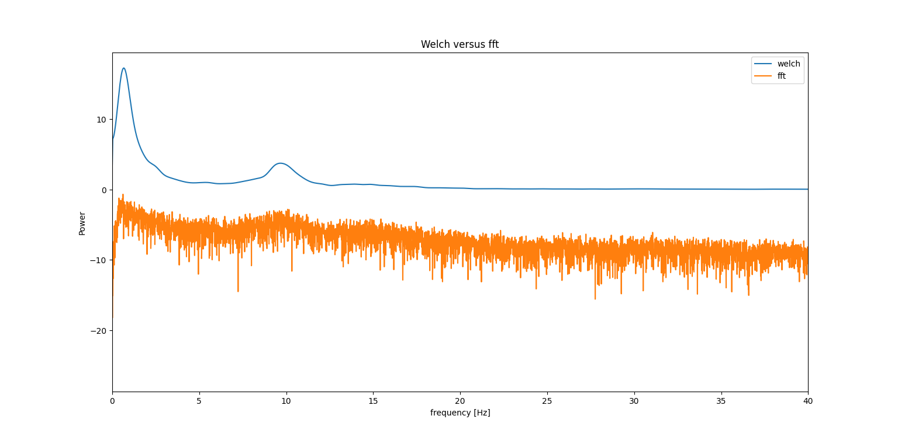

spectral_analysis_of_eeg_signal module
- welch_example()[source]
Spectral analysis of an EEG signal using welch method
Welch method:
Cut the signal in n window and compute fft on each of them.
Imagine a time-domain signal represented as a sinusoidal wave. At the core of the Welch method, you divide this signal into partially overlapping segments. For each segment, you apply a window to mitigate edge effects. T hen, instead of taking the FFT of the entire signal, you take the FFT of each modified segment and average them.
The idea is that this overlapping approach reduces the variance of the estimation, which can be particularly useful when the signal changes over time.
Advantage over fft:
More adapt if signal characteristics change over time. E.g Noise increase/ decrease/ change of shape over time.
Example:
 